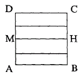

Беседа 2375 от 3877 · Беинса Дуно
Незавършени, преходни и завършени процеси
Отче наш
Ще имате тема за размишление: "Качества на голямото и малкото и на силното и на слабото."
Ако ви запитам кое е най-положителното знание, как ще отговорите? Какво подразбирате под думите: "да знаеш"? Знанието трябва да го турите в конкретен смисъл. Да знаете нещо положително, в което никога да се не усъмните. Във всяко нещо, в което може да се усъмните, има нещо, което не знаете. Щом се усъмните, не знаете. 
Някой ви разправя как са го угощавали някъде с една хубава баница. Той ви разправя как е направена баницата. За вас баницата не е толкова важна, дали той е ял от баницата или не е, също не е важно. Но след като ти разправил, в тебе ще се зароди желание да си източиш една такава баница. Ти си млад момък, разправяш това и казваш на майка си, че са ти говорили за една такава баница. Майка ти разточи една такава баница. Тази разточена баница на майка ти ще прилича ли на онази баница, за която ти разправяха? Каква е била тази, за която са ти разправяли, и тази, която майка ти е разточила? Тези баници са различни. Неговите условия вън, при които той ял, и условията, при които ти ядеш, се различават. Туй, което ти разправяха е преходно състояние. Той ти разправя за една баница, която ял. Туй, което той ти разправя, или баницата, която ти ядеш, кое е по-реално? В дадения случай не е важно, дали онова, което ми разправяте е реално или не. Да допуснем, че то е реално, че той ял тази баница. Два случая ще изнеса – единият е положителен, другият е отрицателен.
Представете си, че тази баница е реална. Той ти разправя, но ти нямаш условия. След като ти разправя за баницата, ти ще преглътнеш два–три пъти. Казваш: "Как хубаво са го нагостили, но за мене такъв случай няма!" Остане мисълта, че този човек има някаква привилегия. Остане, че само той е ял. За него е реална баницата, а за тебе реална ли е? – За тебе не е реална. Това е едно предположение. Идва сега спорът. Той ти разправя, ти отиваш и разправяш същата приказка на един свой познат, че еди кой си ял такава баница. Толкова хубава, втора баница като нея не е ял никой. Той казва: "Не е вярно това!" Как ще му докажеш, че баницата, която първият ял, е такава, каквато той разправя? Ти от втора ръка само си слушал за баницата как ще разкажеш на трети, че баницата е реална? Какви ще бъдат твоите аргументи? Сега първото положение: аз не зная дали онази баница, за която той разправя, че ял, е реална. При второто положение – казва на майка си да му направи баница, подобна на онази, за която са му разправяли. Той не знае дали онази баница, за която му разправяли е реална, но тази, която е направила майка му е реална. Представете си, че онзи разправя за нещо въображаемо, не ял такава баница. Ти сега ядеш една баница, направена по примера на онази въображаема баница. Коя баница е реална? Сега схващате ли моята мисъл? Коя баница е реална? Баницата, която ти ядеш, вече за тебе е реална. Ти минаваш от нереалното към реалното. Най-първо ти говориш за реалното, но после казваш: "Не, искам да ви наведа конкретно на въпроса за реалното, как от нереалното може да излезе реалното и от реалното може да излезе нереалното."
Една баница, която той ял, реална ли е за тебе? Не е реална. Може баницата да не е реална за него, но за тебе да стане реална. Майка ти ще ти разточи баница, по този нереалния образ.
Казвам, има незавършени тонове. В природата, в живота има незавършени тонове. Цитират едно изречение от Битието. Казва се там, че Бог направил небето и земята. Земята била незавършена неустроена, дух Божий се носел по повърхността на земята. Какво е създал Бог? - Бог е създал небето и земята и земята била неустроена. Има една тънка мисъл тука, която на вас не ви идва на ум. Противоречието произтича от това, че има една мисъл в този стих, която не ви идва на ум. Защо именно земята била неустроена?
Представете си един извор как отначало извира, после как образувалата се река е прекопала коритото до морето. Представете си, че най-малко сто години са необходими на този извор, докато тръгне водата от извора и стигне до морето. Водата, която е излязла от началото на реката, е незавършен процес. Там, дето има едно корито, а няма вода, то е още незавършен процес, неустроена е, в проекция е. Когато казваме, че небето било устроено, а земята неустроена, разбираме ония сили, които са действали в небето, но не действат на земята. Земята е само в проекция: "Дух Божий се носи". Сега тия състояния съществуват. Често във вас съществуват те – във вашето съзнание, във вашия ум, във вашето сърце съществуват тия два процеса. Във вас има известни процеси, които са незавършени, нещо, което знаете, че е така. Има нещо, което не е така, искаш изведнъж да стане. Може ли изведнъж да стане? – Сто години се изискват, докато стигне до края. Водата, като стигне до края, какво ще стане? Ще се образува реката. Значи имате една река, която се влива в морето, по която може да работят корабите, да влизат, да излизат. Дотогава, докато водата не е стигнала до края, по тази река не може да се плава. Тъй е. Питат: "Какво ще стане сега?" След като реката е завършена, по нея ще може да се плава вече. Следователно когато вие свържете едно начало с един завършен край, само тогава може да се почне един процес, по който вие може да работите.
Имате една работа, един процес, но някоя точка от този конец не е достигнала до този предел. Питате, като достигне до крайния предел какво ще започнете? Корабите ще започнат да работят – вторият процес. Да ви обясня. Допуснете, че един майстор прави цигулки по модела на Страдивариус. Работи година, две, три върху цигулката и още не е направена, остава вече полировката. Като завърши цигулката, какво ще направи? Ще дойде вторият процес. Той, като направи цигулката, всички ще говорят за нейната направа. Някой казва: "Аз мисля, че като направи цигулката след това няма нищо." Като направи една цигулка ще започне друг един процес. Ще опита какъв тон има тази цигулка. Ще дойде големият майстор, ще опъне четири струни на цигулката, ще почне да свири върху направената цигулка. Ще вземе един тон, втори, трети, ще опита всичките позиции. След като опита, ще намери, че е добре направена. Завършен е този процес. Какво ще стане? – Ще свири едно класическо парче, второ, трето, четвърто. Колко време ще е необходимо да изсвири на тази цигулка всичките написани музикални парчета? – Не се знае. Колко години ще ви вземе да изсвирите десет милиона парчета?
Онзи, който философски разсъждава, казва: "Направи Господ земята. Какво от това?" Или някой път аз съм слушал някого: "Човек, след като умре, къде ще иде?" – Ще иде в оня свят. Какво има? – Ще живее хиляди години. След като живял хиляди години, какво е постигнал? Дошъл е до края на хилядата години, значи от извора е излязъл, влязъл е в морето, образувал река. По тази река ще започнат да функционират кораби, ще има работа. Излязъл си хиляда години, направил си цигулка, ще свириш, ще слушаш. Цигулката и цигуларят ще имат работа. След хиляда години някой казва: "Какво ще стане?" – Ето какво ще стане: един господин в Америка, след като говорил, държал реч и казал: "Какво ми остава сега?" Казвам му: "Иди си в дома да спиш." Той мисли, че вече няма никакъв друг процес. Това е неразбиране. Ти не може да направиш прекъсване на една човешка мисъл. Някой казва: "След този живот няма друг живот." Как ще го преведеш: "Няма друг живот."
Представете си че "А" (чертежа) е едно начало, "Б" е край. В една работа може ли да има две начала? – Не може. Едно начало може да има. Следователно има едно начало, има и един край. Питам сега, след това начало и след този край, какво има, какво остава? – Всяко начало и всеки край, след като се съберат на едно място, образуват движение. Всякога движението разбира събирането на едно начало с един край. Всякога, когато едно чувство дойде до крайния предел, дава ход на една най-елементарна мисъл на човека. Така вървят. Казвате: "Те са отвлечени работи." Ако една мисъл е отвлечена какво от това? Какво подразбирате под отвлечена мисъл? Отвлечена мисъл не я виждаш, не може да си я представиш.
В перспективната геометрия онзи геометрик, туря плоскости, завърти ги, неговият ум работи. Той тури една линия, прави картина, плоскости чертае. Никаква плоскост няма. В неговия ум има, но ти забъркаш работата, не знаеш тази плоскост къде отива. Онзи, който разправя работите, разбира тези плоскости, те за него са определени. Сега вие искате вашият живот да бъде успешен, да направите нещо. Ами че трябва да знаете пътя, по който трябва да работите. Вие считате, че на някой човек всичко му върви в живота. Мислите, че той е нещо произволно. Казвате: "Късметлия е този човек!" Какъв късметлия! Онзи, който е направил цигулката, късметлия ли е? Той употребил две–три години, работил, тънко изработил. Някой път може да оценят цигулката няколко милиона, някой път може да оценят много малко работата му. Казват: "Как му провървяло!" Как няма да му провърви? Направил нещо хубаво. Всеки от вас може ли да направи цигулка, ако вземе три–четири парчета дъска, тури ги едно до друго, закове ги. Искаш да продадеш това за цигулка, не ти върви. Че как ще ти върви? Казваш: "Това е една цигулка, на която можеш да свириш." Не отричам, може да е цигулка, но какви ще бъдат тоновете, които излизат?
Всяка една мисъл, която се образува в човека, трябва да бъде завършена, хубаво направена. Всяко едно чувство, което се заражда, трябва да бъде завършено, не заковани четири дъски с гвоздеи. Завършени трябва да бъдат нещата, добре изработени. След туй ще започне един процес.
Вие досега не знаехте, че българите имат една музика с незавършени тонове. Вие не ги знаете кои са. Те може да са толкова тънки, че едва ли ще направите разлика. Ще има една разлика. Не мислете, че незавършените работи не са хубави. Хубави са, но незавършени са. Началото е хубаво, започната работа, но незавършена работа. (Учителят свири.) Това е една песен с незавършени тонове, незавършена песен. Няма изходен път. То е замотан кръг. (Учителят свири.) Това е незавършена песен, тропаница има. Незавършена работа, като тропа вдига прах. Защото българинът, като тропа бързо, майсторски тропа. Какъв майсторлък има в едно тропане, дето се вдига само прах? Вдигнал прах, казва, че хубаво играл. Много повече прах е вдигнал, отколкото е играл. Та, когато вие, във вашата мисъл вдигате повече прах, това са незавършените тонове. Сега да дойдем до преходните, завършени тонове няма да ви свиря. За преходните тонове ще ви дам един модел от европейската музика. (Учителят свири.) Това е преходна музика. Тук всички тонове са преходни. Има стремеж към някъде, към завършените тонове. Всякога, щом си в областта на един незавършен тон, ти усещаш недоволство. След като си играл толкоз, най-първо си играл, доволен си. Като играеш, след като спреш, казваш: "Уморен съм, много тропах, много играх, прах се вдигна, изгубих си времето." Недоволен си. В незавършените тонове ти всякога чувстваш недоволство. И недовършена работа, тя няма край, не излиза работата. А пък в преходните тонове в тебе има едно малко обнадеждаване. Щом минаваш от един незавършен процес към един преходен, ще има обнадеждаване. Че това, непостижимото в света има надежда да се постигне. Аз слушам някой път пеете незавършени песни. Кога ти може да определиш точно песента, че не е завършена? Завършените песни никой не може да пее. Как ги разбирате, незавършените песни? Значи българинът дето не му върви, той трябва да измени тоновете: (Учителят свири и пее: "Не пей синко, какво правиш?") Какво ще направи ще тропа или ще плаче. Вие седнете и плачете. Това какъв процес е? - Незавършен. Плачеш ли или боли те крака, един незавършен процес е.
Та вие често в живота дойдете до обезсърчение, не може да си дадете отчет. Казвате: "Защо ми е?" – То е според разбирането на хората. Сега всички, които изучават българска музика, казват: "Гениална е, хубава!" Тя е една музика, която е незавършена. Има образци, колкото искаш, но незавършени. В тоновете трябва да се даде нещо. Някъде чувствата са завършени, тоновете не са завършени. Най-първо вие туряте на една песен незавършени тонове, после преходни тонове, докато дойдете до положението на завършените тонове. Един завършен тон е мощна сила. Завършеният тон е една река, дошла в морето. Кораби може да плават от единия й край до другия. (Учителят свири.) Този тон е незавършен. Той е непреходен тон. Той е в трета позиция. По какво може да познаете? – Липсва му нещо. Както и да го пеете, незавършен тон е. Туй е преходен тон. Следователно, незавършените положения на вашата мисъл трябва да знаете, че са като едно преходно състояние. Вземате сега самото пеене. (Учителят пее: ) "Господи, Който Си на небето, да се свети Името Ти и т.н." Аз бих дал на Отче наш друго пеене. (Учителят го пее по църковному: ) Това е едно незавършено пеене. Дайте ми едно преходно състояние на Отче наш. Отче наш е незавършено, преходно как трябва да се пее? Мъчна работа. Преходно трябва да се пее. "Отче наш" (Учителят го пее на друга мелодия.) Това е преходно състояние. Ти вече слизаш с туй, може да работиш. Имаш вдъхновение.
Когато вие опростотворявате работите, вие идвате до незавършените процеси. Там нещата не стават. Не, че са лоши, но то е начало на нещата. Вие трябва да минете в едно преходно състояние на вашата мисъл, за да влезете в пътя на постижението. Казвате: "След като постигна, какво ще придобия?" Чудни са хората, когато задават този въпрос! След като постигнеш това, което желаеш, още! Ако желаеш живота и го придобиеш, какво ще постигнеш? Той, без да е постигнал живота, казва: "Какво от това, като съм придобил живота?" Вечния живот ако е придобил, да пита: "Какво от това?" Той още не го е придобил. Това не е мисъл, това са спънки, това са бентове, турбини на човешката мисъл. Така не се разсъждава. Някой казва: "Какво от това, като зная да свиря?" Ето какво. Аз, ако зная да свиря, имам една раница, която ми тегне на гърба, изсвиря един преходен тон, раницата слиза от гърба ми. Ти, който не знаеш да свириш, като свириш, раницата ще седи на гърба ти, а аз, като изсвиря преходните тонове, ще имам нещо в джоба си. Ти, като изсвириш, ще бъдеш гладен, ще бъдеш нещастен, ще бъдеш отчаян, около тебе ще се заредят ред нещастия. Най-после ти ще замислиш да се освободиш, по кой начин да се освободиш? Представете си, че вие сте слуга, прати ви господарят да донесете една стомна от десет килограма. Носиш стомната и най-после отмалее ти ръката, искаш да се освободиш от тази тежест. Разсърдиш се, удариш стомната, счупиш я. Какво ще направиш със счупената стомна? Върнеш се в къщи и искаш да се освободиш или ще кажеш, че си искал да счупиш стомната. Ако кажеш, че си искал нарочно да я счупиш, нарочно си я блъснал, какво те очаква? Като се върнеш вкъщи те чака тояга. Онзи твой господар е сприхав човек казва: "Аз нали те пратих за вода, на какво основание удари стомната?" Какво ще допринесеш като удариш стомната? - Ще те набият. Правилно ли си разрешил? - Не си разрешил нищо. Най-после второто положение. Да избегнеш боя, ти си излъгал. Какво си спечелил? Ти спечелваш една черта в характера си, ставаш страхлив. Като излъжеш, ти си един страхливец.
Сега мнозина от вас имате мъчнотии в живота. Що е мъчнотията? – Пратил ви Господ на извора със стомната. Отмаляла ви ръката, казвате: "Тази стомна не мога да занеса, тя е много тежка." Но има друго положение. Десет килограма не можеш да носиш, вземи два килограма вода. Да ви дам едно разрешение. Тури два килограма вода в стомната, макар стомната да побира десет, ти тури два килограма. Ако се върнеш, господарят може пак да те бие, че не си я напълнил, но все таки, като му занесеш два килограма вода, той ще те удари само веднъж, може и никак да не те удари. Ако той е сприхав човек, като занесеш два килограма вода, може да те хука, но може да не ти каже нищо. Едно нещо бъди уверен, понеже твоят господар няма опитност, ти не му казвай, че си турил два килограма вода в стомната. Той нищо не знае, няма понятие. Господарят никога не е турял десет килограма стомна, той не знае колко тежи. Той вижда само формата, но колко тежи, колко вода съдържа, нищо не знае. Ти, като занесеш два килограма вода, той ще мисли, че десет килограма си занесъл. Ти не му казвай, че си занесъл два килограма вода. Ти занеси стомната като пълна.
Питате: "Не е ли това една лъжа?" Питам: Какво отношение имам аз, длъжен ли съм да му казвам какво има в стомната, длъжен ли съм да му казвам, че няма десет килограма вода? Но аз ще ви покажа къде е погрешката. Същевременно вие сте и господар и слуга. Казвате, че слугата не трябва да лъже. Съгласен съм. Че и господарят не трябва да бие слугата. Вие ще кажете, че господарят има право да наказва слугата. Или: Господарят трябва да бъде много любезен със слугата. Но вие едновременно сте и господари и слуги. Направите една погрешка, наказание ще си наложите, колко тояги ще си ударите? Ако определите десет тояги, как ще си ги ударите? Едновременно ако вие сте и господар и слуга, какво ще правите. Слугата и господарят в моя ум, единият е начало, другият е край. Следователно, господарят е началото, слугата – краят. Двамата представляват едно цяло в мене. Следователно, господарят никога не трябва да се сърди на слугата; слугата никога не трябва да одумва господаря си. Като сте едновременно и господар и слуга, как ще се одумвате. Като господар ще се одумвате и като слуга ще се одумвате. Вие сте същия – и господар и слуга. Какво трябва да правите? Ако слугата е донесъл две кила вода, какво трябва да правите? Ще кажете: "Много голяма стомна, много далеч е мястото, на голямо разстояние." Трябваше да го съжаля. Аз, умният господар, трябваше да му дам една малка стомна. Далече е мястото, много голяма стомна дадох. Вторият път, като дойде, ще му дам малка стомна, ще му дам стомна точно от два килограма."
Сега обяснявам идеята за господаря. Искам едно психическо обяснение да ви дам: какво нещо е господарят и какво нещо е слугата. Човек е и господар и слуга. Човек отвън е господар, отвътре – слуга. Слугата отвън е проекция на нещо друго. Пак ще ви приведа още един пример. Вие не се познавате, понеже един образ е взет от вашите младини, когато сте бил слуга. А пък господарят е взет на старини, когато е на 60 години, с брада. Струва ви се, че господарят и слугата се различават по форма. Но той е един и същ – на младини е слуга, на старини – господар. Всички стари хора са все господари. Всеки, който остарява, става господар. Всеки, който се подмладява, става слуга. Следователно, младият не може да бъде господар, старият не може да бъде слуга. Когато нищо не можете да правите, ще станете господар, а пък когато всичко може да правите, ще станете слуга. Туй е правилното разрешение на въпроса.
Някой казва: "Дотегна ми да ми господаруват хората." Да не ви дотяга това положение. Вие сте един и същ, какво ви дотяга? Ако сте остарели, ще заповядвате, има кому да заповядвате, нали сте господар? Казвате на краката: "Я, Стоянчо, я Драганчо, днес на работа!" Сега на млади години ходите, бързате, пък на старини едва пристъпвате. От вас зависи да разберете. Вие идвате до един социален въпрос. Отвън господар. Ако нямате една права философия за живота, не може да се оправите. Светът не може да се оправи, понеже вашите възгледи за живота са криви. Ние не мислим тъй, както Бог е създал света. Христос казва: "Отец ми работи и аз работя." Не казва за него, че Отец ми господарува. "Отец ми работи и аз работя." Господ работи, вие искате да почивате. Откъде накъде? Вие сте остарели.
Сега какво разбрахте? Каква беше темата? Всякога, когато имате едно начало, имате и един край. Трябва да знаете, че щом дойде краят, тогава започва истинската работа. Преди да дойде, преди да се съединят началото и краят, няма работа. Това са състояния незавършени, преходни състояния. Тогава започва истинската работа в живота. Когато едно начало се свърже със своя край, започва истинската работа. Тогава започвате да влизате в завършените процеси. Незавършените процеси, преходните процеси, се стремят към завършените процеси. Това е.
Аз ви турям една нова основа, върху която може да градите, върху която може да построите вашата бъдеща философия. Всичките ви работи ще тръгнат другояче. Може да се спрем някой път върху явленията.
Само светлият път на Мъдростта води към Истината!
36 беседа МОК, 14 година, държана от Учителя на 26 юли 1935г. петък, 5 ч.с., София, Изгрев